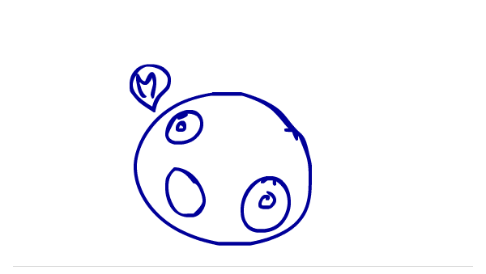
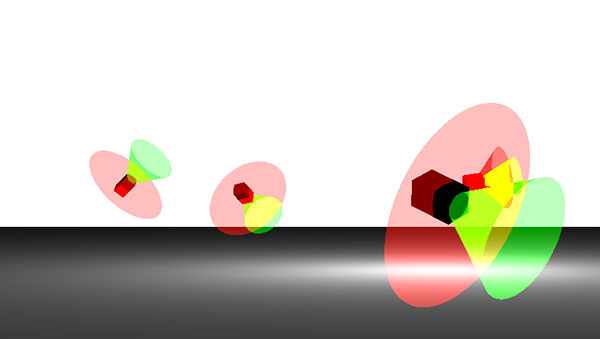
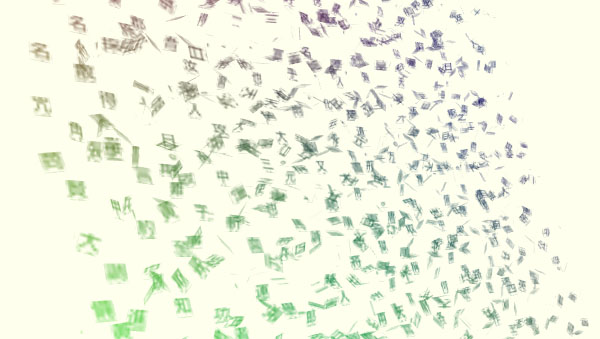
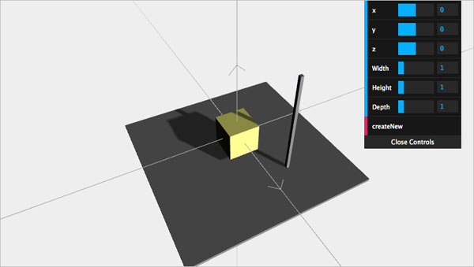
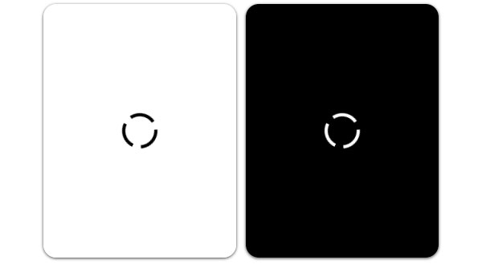
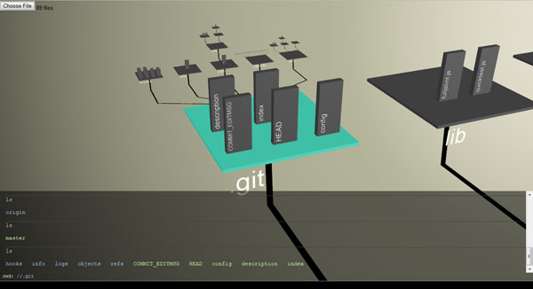
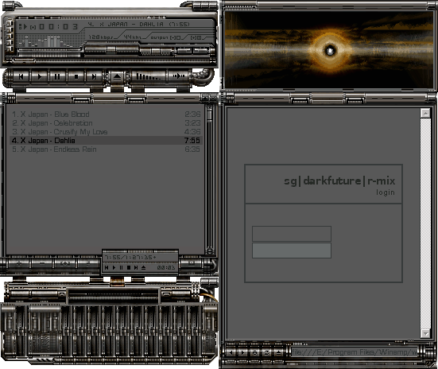
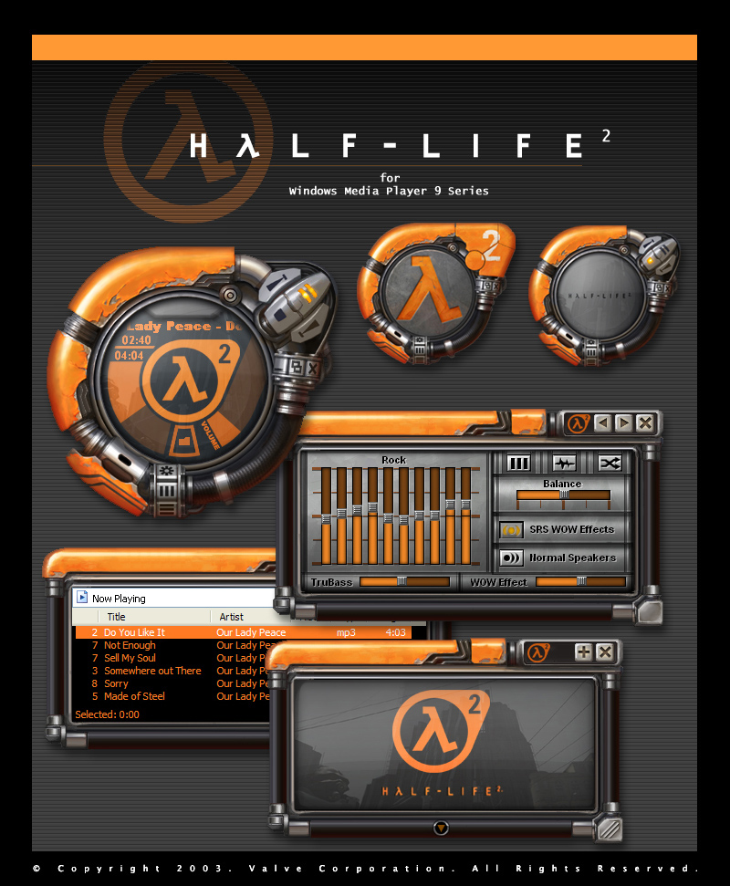
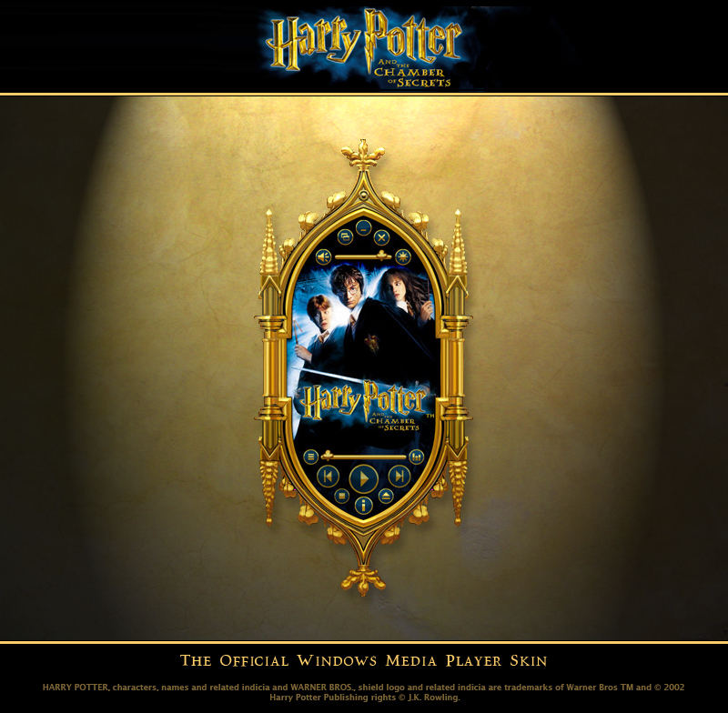

Basics of Swiffy - Learn how to make plugin-free HTML animations using Swiffy and Flash.

World Wonders 3D Globe - An article that explains how we made the animated 3D globe on the Google World Wonders site.

3D Positional Audio - A demo that uses the Web Audio API to add 3D audio into a Three.js scene. WASD to move around, drag mouse to look around. Here's an article that explains how it works.

Animated book - Demo on animating every letter of a book with Three.js and an article on how it works.

Basics of Three.js - slides and demos for learning the Three.js JavaScript 3D library, slightly out of date as the library is evolving


Spinner using CSS animations and Canvas

WebGL File System Visualizer - pick a small directory tree (less than 500 files). Here's a video of it in action.

WebGL video filters - my Dublin GTUG talk from June 2011

Drawmore - an HTML5 drawing program with a Vim-like interface

Chrome Experiments Demo Harness - a kiosk app for looping through Chrome Experiments demos

magi - a WebGL scene graph for doing some simple stuff

JSARToolKit - port of FLARToolKit to JavaScript and canvas

Runfield - an HTML5 Canabalt clone with handpainted graphics by yours truly


My WebGL presentation from a Frontend Finland meetup (also available in Finnish)

Missile Fleet - a canvas game

Filezoo - a minimalistic zoomable file manager written in C#. Here's a video of Filezoo in action.
Graphics
sg|darkfuture|r-mix Winamp skin - Return to the dark days of 2000.
Fully animated Windows Media Player skin done as a part of the Skins Factory team

Fully animated Windows Media Player skin done as a part of the Skins Factory team

Fully animated Windows Media Player skin done as a part of the Skins Factory team
Sketch of a music player widget
Logo for Linuxgames